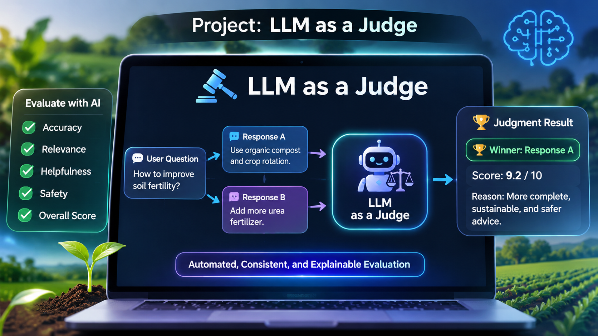
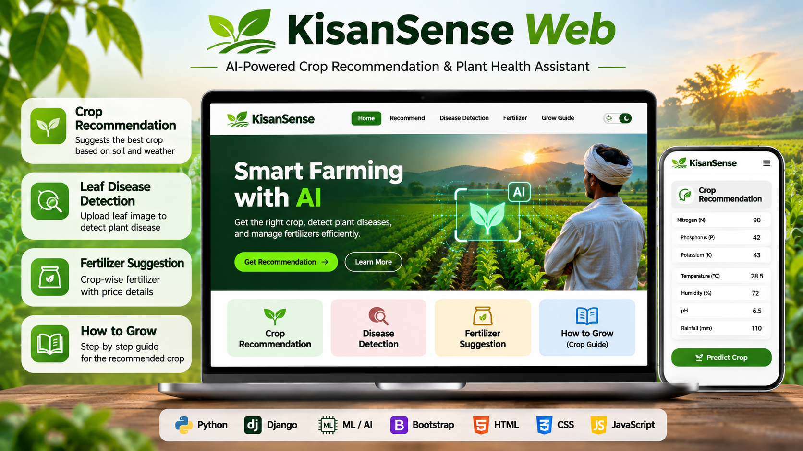
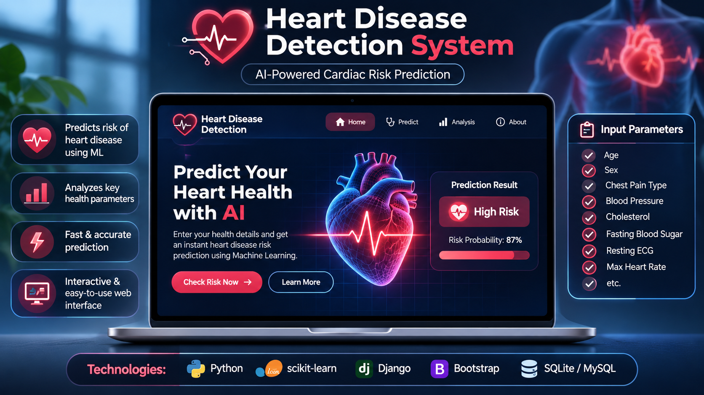

Hi, my name is
I build machine learning models and data-driven products that turn raw data into real decisions. Currently looking for an AI/ML Engineer,Python developer or Data Scientist role where I can take models from notebook to production.
A little about who I am and how I work.
I'm an Electronics and Telecommunication Engineering student from Pune with a strong interest in AI, Machine Learning, and Software Development. I enjoy turning ideas into practical projects, working with data, building intelligent applications, and solving real-world problems through technology.
I love learning new technologies, exploring AI solutions, and improving my problem-solving skills. I believe in continuous learning and building projects that make a real difference.
Tools I use to build things. The bar shows how comfortable I am.
Clean, tested code for data and ML work.
90%Clean, semantic structure for accessible and well-organized web pages.
90%Modern, responsive styling for attractive and user-friendly interfaces.
70%Interactive, dynamic functionality for smooth user experiences
50%scikit-learn, XGBoost, model tuning and evaluation.
85%TensorFlow and PyTorch, CNNs and transformers.
78%Text classification, embeddings, LLM apps.
72%Complex queries, joins, PostgreSQL, MongoDB.
82%Cleaning, feature engineering, analysis.
88%Matplotlib, Seaborn, Plotly, Power BI.
80%GitHub, Docker basics, Streamlit, FastAPI.
80%Web apps, REST APIs, ORM and authentication.
75%Fast APIs to serve ML models, with validation and docs.
80%Generative AI apps, RAG with vector databases, chatbots.
72%Claude, OpenAI and Hugging Face APIs, streaming, tool use.
78%Clear prompts, few-shot examples, structured outputs, evaluation.
85%A few things I've built. Use the filters to explore.

AI-powered evaluation system that compares LLM responses, scores accuracy and relevance, and selects the best answer.
Built an AI-powered evaluation system that compares LLM responses, scores accuracy and relevance, and selects the best response using automated judging.
Multi-Agent AI Research Assistant with automated web research, AI analysis, and report generation.
An AI-powered research assistant that uses multiple agents to search the web, extract information, analyze content, and create detailed research reports.

KrishiSense with AI-powered crop recommendation, plant disease detection, and fertilizer guidance.
A smart agriculture web application that uses machine learning to recommend suitable crops based on soil nutrients and weather conditions. It also helps users identify plant diseases and get crop-specific farming guidance.

ML-Based Heart Disease Detection System with machine learning-based heart disease risk prediction and health analysis.
A web-based healthcare application that analyzes patient health details and predicts the risk of heart disease using a trained machine learning model.
Personal Portfolio Website showcasing my skills, projects, education, and professional experience.
A responsive personal portfolio website designed to present my technical skills, development projects, certifications, and achievements in a clean and professional way.
Have a role or project in mind? Send me a message.
Available for new roles